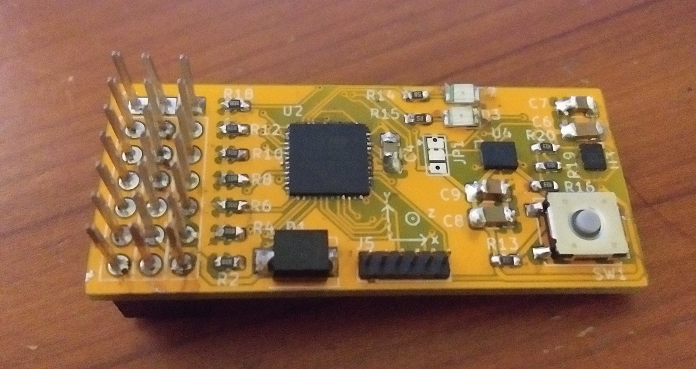

As of this writing, I am still waiting for them to conduct a successful flight, but I have
faith that they will pull it off, and I'll post any data we get here.
As of this writing, I am still waiting for them to conduct a successful flight, but I have
faith that they will pull it off, and I'll post any data we get here.
One of my friends was interested in building and flying remote control aircraft, so I made
a device that "hides" between the receiver and the servo motor connectors. The device saves
the PWM duty cycle of each of the six receiver channels to an SD card, so that the position
of each of the control surfaces could be logged over the course of a flight. Additionally, the
datalogger was equipped with a triaxial magnetometer and a six axis IMU.

As of this writing, I am still waiting for them to conduct a successful flight, but I have
faith that they will pull it off, and I'll post any data we get here.